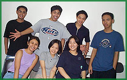

|
Systems
Management Office : Updates
OCS
Uses Employment Information System (EMI)
by: Agnes Bulay
The
Office of Career Services (OCS) handles all information regarding
career education and job placement of all DLSU graduates.
New graduates, in particular, are made accessible to the different
companies and organizations through the use of graduate listings,
résumé file books, and the semi-annual Job Expos.
OCS's
mission is to work towards the actualization of the Student
Personnel Service's goal of facilitating student preparation
for post-university life.
The
EMI consists of two (2) modules, the Graduate Listing Service
(GLS) and Graduate Employment Information Survey (GEIS).
The
GLS has been implemented to better respond to the companies'
recruitment needs. A company that has subscribed to this service
is able to obtain the latest list of graduates via mail.
The
GEIS, on the other hand, is used by OCS to gather information
about the alumni's job description, salary, and other information
related to their current and previous jobs and, in general,
their lives after graduation. This module also assists OCS
in the preparation of relevant survey questions to alumni
and tallies for them all the answers at the click of a button.
Online
Survey Module Developed for Employment Information System
by:
Ryan Salvanera
OLS
is a web-based application taken after the Graduate Employment
Information System (GEIS). It makes use of ASP (Active Server
Pages) technology with Visual FoxPro as its back-end.
It
was designed to allow the different colleges to conduct customized
surveys through the Internet. The users can specify the questions,
types of answers and even the target audience. A report will
then be generated to assist them in their decision-making
activities.
The
system's design also allows it to be used for evaluation,
ordering, and elections. OLS is also scheduled for integration
with the My.LaSalle portal anytime within the first term of
school year 2001-2002.
Staff
News
An
Eagle with the Archers
by:
Ryan
Salvanera
The
first few days in a new environment always send jitters to
one's nerves. A mixture of excitement and anxiety streamed
through my veins. Though this feeling was nothing new to me,
having been to different jobs before, there was definitely
something different with ITC. Could it be the fact that it
was miles away from home? Or maybe because I was still on
"vacation mode"?
|
I
was venturing into
"enemy territory".
An EAGLE nesting
with the ARCHERS.
|
Then
again, maybe it was because I was venturing into "enemy
territory". An EAGLE nesting with the ARCHERS. Would
I be judged because of where I studied? Would there be any
discrimination? Would I even be accepted? These questions
haunted me for days. Thus, I kept my guard and was hesitant
to reveal the real me.
Now,
looking back at those days always brings a smile to my face.
I feel so foolish for having entertained such thoughts. By
working in ITC, you will be surrounded by real people who
will accept you for who you are. Come to think of it, ITC
is not just a group of individuals working together, but also
a family that supports one another.
I
might have ventured into enemy territory but I certainly found
allies along the way.
SITE
News
Things
We Will Miss
by:
Joseph
Arrieta, Michelle Chua, Brian Evidente, Denny Teodoro
We
will miss a lot of things about ITC. One of them is the friendly,
approachable, and talented staff of ITC. They made our stay
here a fun and learning experience. We will also miss the
Friday night activities and the free meriendas of SMO.
We
certainly had a lot of fun hosting ITC's version of Nickelodeon's
"Double Dare." We can still remember the wacky things
that some of the ITC staff did during the physical challenge
portion of the game- Sir Harold dipping his arm in a bucket
of slime and Sir Brian eating polvoron while saying a tongue
twister.
We
will also miss working on our projects. Some of us don't even
want the college life anymore. We want to go straight to work.
We'll miss our very own cubicles and computers, especially
our picture and video files.
Last
but not least, how can Denny ever forget his dearest form
activity? The seemingly endless form activity that is discussed
every OJT meeting. And yet, it will also be sorely missed.
Thank you once again for everything.
Some
Things Are Worth Remembering
by:
Pamela Garcia, Aimee delos Santos, Clarice Tantuco, Charleston
Young
Working
in ITC has been a very pleasant experience for us. The employees
were warm and friendly. They made us feel at home, and treated
us equally as if we were also regular employees of ITC. Our
supervisors were always there to guide us, provide us with
the knowledge that we need to do our tasks and their leadership
motivated us and helped us with our projects.
We
will miss many things here when we leave. First of all, we
will all miss the employees who became our friends throughout
the practicum program. The Friday night activities that made
us smile and put joy into our hearts. The free meriendas that
filled our hungry stomachs, and the times when SMO forgot
to invite us when there are free food (always).
In
the office, we will miss playing pusoy dos, and tong-its after
5pm. Some of us learned these things in the office. Like Cla,
she learned all in a day. While Aimee, a hustler in playing
pusoy dos, learned to play tong-its in the office.
Office
humors like sir Harold throwing jokes on Sir Brian, call names
of Sir Lemuel, the twins- Sir Brian and Sir Glen, the jokes
on Sir Johnny when he was interviewed by Philippine Star,
and many others.
In our stay with ITC, we learned many things that will be
of importance when we graduate and work outside. We experienced
how it felt to work at home and in the office. Because of
this, we will be better equipped as students and as individuals.
Our deepest and sincerest thanks to everybody for making this
experience a pleasant one. Good luck to all!
|